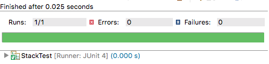
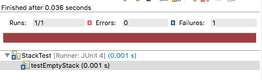
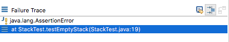
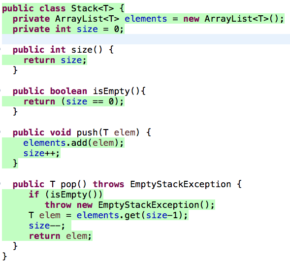
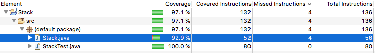
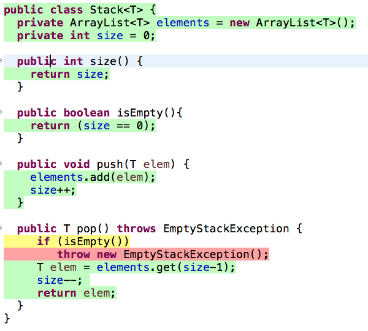

Engenharia de Software Moderna
8 Testes
Code without tests is bad code. – Michael Feathers
Este capítulo inicia com uma introdução a testes, na qual usamos uma pirâmide para classificar os principais tipos de testes, de acordo com a sua granularidade e frequência. Também esclarecemos que o nosso foco no capítulo são testes de unidade. Assim, começamos com uma seção sobre conceitos e funcionamento básico desse tipo de teste (Seção 8.2). Em seguida, tratamos de aspectos avançados e complementares, ainda sobre testes de unidade, incluindo princípios para escrita de tais testes (Seção 8.3), cobertura de testes (Seção 8.4), projeto de software para facilitar a implementação de testes de unidade (Seção 8.5) e objetos mocks, os quais são usados para facilitar a implementação de testes de unidade (Seção 8.6). Na Seção 8.7, apresentamos o conceito de Desenvolvimento Dirigido por Testes (ou Test-Driven Development, TDD). Em seguida, tratamos dos testes da parte de cima da pirâmide de testes, ou seja, Testes de Integração (Seção 8.8) e Testes de Sistemas (Seção 8.9). Para fechar o capítulo, a Seção 8.10 cobre de forma rápida outros tipos de testes, tais como: testes caixa preta e caixa branca, testes de aceitação e testes de requisitos não-funcionais.
8.1 Introdução
Software é uma das construções humanas mais complexas, como discutimos na Introdução deste livro. Portanto, é compreensível que sistemas de software estejam sujeitos aos mais variados tipos de erros e inconsistências. Para evitar que tais erros cheguem aos usuários finais e causem prejuízos de valor incalculável, é fundamental introduzir atividades de teste em projetos de desenvolvimento de software. De fato, testes é uma das práticas de programação mais valorizadas hoje em dia, em qualquer tipo de software. É também uma das práticas que sofreram mais transformações nos anos recentes.
Quando o desenvolvimento era em cascata, os testes ocorriam em uma fase separada, após as fases de levantamento de requisitos, análise, projeto e codificação. Além disso, existia uma equipe separada de testes, responsável por verificar se a implementação atendia aos requisitos do sistema. Para garantir isso, frequentemente os testes eram manuais, isto é, uma pessoa usava o sistema, informava dados de entrada e verificava se as saídas eram aquelas esperadas. Assim, o objetivo de tais testes era apenas detectar bugs, antes que o sistema entrasse em produção.
Com métodos ágeis, a prática de testes de software foi profundamente reformulada:
Grande parte dos testes passou a ser automatizada, isto é, além de implementar as classes de um sistema, os desenvolvedores passaram a implementar também código para testar tais classes. Assim, os programas tornaram-se auto-testáveis.
Testes não são mais implementados após todas as classes de um sistema ficarem prontas. Muitas vezes, eles são implementados até mesmo antes dessas classes.
Não existem mais grandes equipes de testes — ou elas são responsáveis por testes específicos. Em vez disso, o desenvolvedor que implementa uma classe também deve implementar os seus testes.
Testes não são mais um instrumento exclusivo para detecção de bugs. Claro, isso continua sendo importante, mas testes ganharam novas funções, como garantir que uma classe continuará funcionando após um bug ser corrigido em uma outra parte do sistema. E testes são também usados como documentação para o código de produção.
Essas transformações tornaram testes uma das práticas de programação mais valorizadas em desenvolvimento moderno de software. É nesse contexto que devemos entender a frase de Michael Feathers que abre esse capítulo: se um código não é acompanhado de testes, ele pode ser considerado de baixa qualidade ou até mesmo um código legado.
Neste capítulo, vamos focar em testes automatizados, pois testes manuais dão muito trabalho, são demorados e caros. Pior ainda, eles devem ser repetidos toda vez que o sistema sofrer uma modificação.
Uma forma interessante de classificar testes automatizados é por meio de uma pirâmide de testes, originalmente proposta por Mike Cohn (link). Como mostra a próxima figura, essa pirâmide particiona os testes de acordo com sua granularidade.
Particularmente, os testes são divididos em três grupos. Testes de unidade verificam automaticamente pequenas partes de um código, normalmente uma classe apenas (acompanhe também pelas figuras da próxma página). Eles formam a base da pirâmide, ou seja, a maior parte dos testes estão nessa categoria. Testes de unidade são simples, mais fáceis de implementar e executam rapidamente. No próximo nível, temos testes de integração ou testes de serviços, que verificam uma funcionalidade ou transação completa de um sistema. Logo, são testes que usam diversas classes, de pacotes distintos, e podem ainda testar componentes externos, como bancos de dados. Testes de integração demandam mais esforço para serem implementados e executam de forma mais lenta. Por fim, no topo da pirâmide, temos os testes de sistema, também chamados de testes de interface com o usuário. Eles simulam, da forma mais fiel possível, uma sessão de uso do sistema por um usuário real. Como são testes de ponta a ponta (end-to-end), eles são mais caros, mais lentos e menos numerosos. Testes de interface costumam ser também frágeis, isto é, mínimas alterações nos componentes da interface podem demandar modificações nesses testes.
Uma recomendação genérica é que esses três testes sejam implementados na seguinte proporção: 70% como testes de unidades; 20% como testes de serviços e 10% como testes de sistema (link, Capítulo 3).
Neste capítulo, vamos estudar os três tipos de testes da pirâmide de testes. O espaço que dedicaremos a cada teste também será compatível com seu espaço na pirâmide. Ou seja, falaremos mais de testes de unidade do que de testes de sistema, pois os primeiros são muito mais comuns. Antes de começar de fato, gostaríamos de relembrar alguns conceitos que apresentamos na Introdução. Diz-se que um código possui um defeito — ou um bug, de modo mais informal — quando ele não está de acordo com a sua especificação. Se um código com defeito for executado e levar o programa a apresentar um resultado ou comportamento incorreto, dizemos que ocorreu uma falha (failure).
8.2 Testes de Unidade
Testes de unidade são testes automatizados de pequenas unidades de código, normalmente classes, as quais são testadas de forma isolada do restante do sistema. Um teste de unidade é um programa que chama métodos de uma classe e verifica se eles retornam os resultados esperados. Assim, quando se usa testes de unidades, o código de um sistema pode ser dividido em dois grupos: um conjunto de classes — que implementam os requisitos do sistema — e um conjunto de testes, conforme ilustrado na próxima figura.
A figura mostra um sistema com n classes e m testes. Como pode ser observado, não existe uma correspondência de 1 para 1 entre classes e testes. Por exemplo, uma classe pode ter mais de um teste. É o caso da classe C1, que é testada por T1 e T2. Provavelmente, isso ocorre porque C1 é uma classe importante, que precisa ser testada em diferentes contextos. Por outro lado, C2 não possui testes, ou porque os desenvolvedores esqueceram de implementar ou porque ela é uma classe menos importante.
Testes de unidade são implementados usando-se frameworks construídos especificamente para esse fim. Os mais conhecidos são chamados de frameworks xUnit, onde o x designa a linguagem usada na implementação dos testes. O primeiro desses frameworks — chamado sUnit — foi implementado por Kent Beck no final da década de 80 para Smalltalk. Neste capítulo, nossos testes serão implementados em Java, usando o JUnit. A primeira versão do JUnit foi implementada em conjunto por Kent Beck e Erich Gamma, em 1997, durante uma viagem de avião entre a Suíça e os EUA.
Hoje, existem versões de frameworks xUnit para as principais linguagens de programação. Logo, uma das vantagens de testes de unidade é que os desenvolvedores não precisam aprender uma nova linguagem de programação, pois os testes são implementados na mesma linguagem do sistema que pretende-se testar.
Para explicar os conceitos de testes de unidade, vamos usar a seguinte classe Stack:
import java.util.ArrayList;
import java.util.EmptyStackException;
public class Stack<T> {
private ArrayList<T> elements = new ArrayList<T>();
private int size = 0;
public int size() {
return size;
}
public boolean isEmpty() {
return (size == 0);
}
public void push(T elem) {
elements.add(elem);
size++;
}
public T pop() throws EmptyStackException {
if (isEmpty())
throw new EmptyStackException();
T elem = elements.get(size-1);
size--;
return elem;
}
}JUnit permite implementar classes que vão testar — de forma automática — classes da aplicação, como a classe Stack. Por convenção, classes de teste têm o mesmo nome das classes testadas, mas com um sufixo Test. Portanto, nossa primeira classe de teste vai se chamar StackTest. Já os métodos de teste começam com o prefixo test e devem, obrigatoriamente, atender às seguintes condições: (1) serem públicos, pois eles serão chamados pelo JUnit; (2) não possuírem parâmetros; (3) possuírem a anotação @Test, a qual identifica métodos que deverão ser executados durante um teste.
Mostramos a seguir nosso primeiro teste de unidade:
import org.junit.Test;
import static org.junit.Assert.assertTrue;
public class StackTest {
@Test
public void testEmptyStack() {
Stack<Integer> stack = new Stack<Integer>();
boolean empty = stack.isEmpty();
assertTrue(empty);
}
}Nessa primeira versão, a classe StackTest possui um único método de teste, público, anotado com @Test e chamado testEmptyStack(). Esse método apenas cria uma pilha e testa se ela está vazia.
Métodos de teste têm a seguinte estrutura:
Primeiro, cria-se o contexto do teste, também chamado de fixture. Para isso, deve-se instanciar os objetos que se pretende testar e, se for o caso, inicializá-los. No nosso primeiro exemplo, essa parte do teste inclui apenas a criação de uma pilha de nome
stack.Em seguida, o teste deve chamar um dos métodos da classe que está sendo testada. No exemplo, chamamos o método
isEmpty()e armazenamos o seu resultado em uma variável local.Por fim, devemos testar se o resultado do método é aquele esperado. Para isso, deve-se usar um comando chamado assert. Na verdade, o JUnit oferece diversas variações de
assert, mas todas têm o mesmo objetivo: testar se um determinado resultado é igual a um valor esperado. No exemplo, usamosassertTrue, que verifica se o valor passado como parâmetro é verdadeiro.
IDEs oferecem opções para rodar apenas os testes de um sistema, por exemplo, por meio de uma opção de menu chamada Run as Test
. Ou seja, se o desenvolvedor chamar Run
, ele irá executar o seu programa normalmente, começando pelo método main. No entanto, se ele optar pela opção Run as Test
ele não irá executar o programa, mas apenas os seus testes de unidade.
A próxima figura mostra o resultado da execução do nosso primeiro teste. O resultado é mostrado na própria IDE e a barra verde informa que todos os testes passaram. Pode-se observar que o teste roda rapidamente, em 0.025 segundos.

Porém, suponha que tivéssemos cometido um erro na implementação da classe Stack. Por exemplo, suponha que o atributo size fosse inicializado com o valor 1, em vez de zero. Nesse caso, a execução dos testes iria falhar, como mostrado pela barra vermelha na IDE:

A mensagem de erro informa que houve uma falha durante a execução de testEmptyStack. Falha (failure) é o termo usado pelo JUnit para indicar testes cujo comando assert não foi satisfeito.
Em uma outra janela da IDE, pode-se descobrir que a asserção responsável pela falha encontra-se na linha 19 do arquivo StackTest.java.

Para concluir, vamos mostrar o código completo do teste de unidade:
import org.junit.Test;
import org.junit.Before;
import static org.junit.Assert.assertTrue;
import static org.junit.Assert.assertFalse;
import static org.junit.Assert.assertEquals;
public class StackTest {
Stack<Integer> stack;
@Before
public void init() {
stack = new Stack<Integer>();
}
@Test
public void testEmptyStack() {
assertTrue(stack.isEmpty());
}
@Test
public void testNotEmptyStack() {
stack.push(10);
assertFalse(stack.isEmpty());
}
@Test
public void testSizeStack() {
stack.push(10);
stack.push(20);
stack.push(30);
int size = stack.size();
assertEquals(3,size);
}
@Test
public void testPushPopStack() {
stack.push(10);
stack.push(20);
stack.push(30);
int result = stack.pop();
result = stack.pop();
assertEquals(20,result);
}
@Test(expected = java.util.EmptyStackException.class)
public void testEmptyStackException() {
stack.push(10);
int result = stack.pop();
result = stack.pop();
}
}A classe StackTest tem cinco métodos de teste — todos com anotações @Test. Existe ainda um método, chamado init(), com uma anotação @Before. Esse método é executado pelo JUnit antes de qualquer método de teste. O JUnit funciona do seguinte modo: para cada classe de teste, ele chama cada um de seus métodos @Test. Cada método executa em uma instância diferente da classe de teste. Ou seja, antes de chamar um método @Test, o JUnit instancia um objeto da sua classe. Se essa classe tiver um método @Before, ele é executado antes do método @Test. No exemplo, usamos um método @Before para criar uma instância de Stack, a qual é usada depois pelos métodos @Test. Assim, evitamos repetir esse código de instanciação nos testes.
Para ficar um pouco mais claro, mostramos a seguir o algoritmo usado pelo JUnit para executar os testes de um programa:
para cada classe de teste TC
para cada método m de TC com anotação @Test
o = new TC(); // instancia objeto de teste
se C possui um método b com anotação @Before
então o.b(); // chama método @Before, se existir
o.m(); // chamada método @TestVoltando à classe StackTest, outro método interessante é aquele que testa a situação na qual a execução de um pop() levanta uma EmptyStackException. Veja que esse método — o último do nosso teste — não possui assert. O motivo é que um assert seria um código morto na sua implementação. A chamada de um pop() em uma pilha vazia terminaria a execução do método com uma exceção EmptyStackException. Ou seja, o assert não seria executado. Por isso, a anotação @Test tem um atributo especial que serve para especificar a exceção que deve ser levantada pelo método de teste. Em resumo, testEmptyException vai passar se a sua execução levantar uma EmptyStackException. Caso contrário, ele vai falhar.
Código Fonte: O código fonte de Stack e StackTest está disponível neste link.
Aviso: JUnit possui várias versões. No capítulo, vamos usar a versão 4.12.
8.2.1 Definições
Antes de avançar, vamos apresentar algumas definições:
Teste: método que implementa um teste. O nome deriva da anotação
@Test. São também chamados de método de teste (test method).Fixture: estado do sistema que será testado por um ou mais métodos de teste, incluindo dados, objetos, etc. O termo é reusado da indústria manufatureira, onde fixture é um equipamento que
fixa
uma peça que se pretende construir (veja uma foto na Wikipedia). No contexto de testes de unidade, a função de uma fixture éfixar
o estado — isto é, os dados e objetos — exercitados no teste.Casos de Teste (Test Case): classe com os métodos de teste. O nome tem origem nas primeiras versões do JUnit. Nessas versões, os métodos de testes eram implementados em classes que herdavam de uma classe
TestCase.Suíte de Testes (Test Suite): conjunto de casos de teste, os quais são executados pelo framework de testes de unidade (no nosso caso, JUnit).
Sistema sob Teste (System Under Test, SUT): sistema que está sendo testado. É um nome genérico, usado também em outros tipos de testes, não necessariamente de unidades. Às vezes, usa-se também o termo código de produção, ou seja, código que vai ser executado pelos clientes do sistema.
8.2.2 Quando Escrever Testes de Unidade?
Existem duas respostas principais para essa pergunta. Primeiro, pode-se escrever os testes após implementar uma pequena funcionalidade. Por exemplo, pode-se implementar alguns métodos e, em seguida, seus testes, que devem passar. Isto é, pode-se programar um pouco e escrever testes; programar mais um pouco e escrever novos testes, etc.
Alternativamente, pode-se escrever os testes primeiro, antes de qualquer código de produção. No início, esses testes não vão passar, somente depois que o código sob teste for implementado. Em outras palavras, inicia-se com um código que apenas compila e cujos testes, portanto, falham. Implementa-se então o código de produção e testa-se novamente. Agora, os testes devem passar. Esse estilo de desenvolvimento chama-se Test-Driven Development. Iremos discuti-lo com detalhes na Seção 8.7.
No entanto, existem duas respostas complementares para a questão sobre quando devemos escrever testes. Por exemplo, quando um usuário reportar um bug, pode-se começar sua análise escrevendo um teste que reproduz o bug e que, portanto, vai falhar. No passo seguinte, deve-se corrigir o bug. Se a correção for bem sucedida, o teste vai passar e ganhamos mais um teste para a suíte de testes.
Pode-se escrever testes também quando se estiver depurando um trecho de código. Por exemplo, evite escrever um System.out.println para testar manualmente o resultado de um método. Em vez disso, escreva um método de teste. Quando usa-se um println, ele em algum momento é removido. Já um teste tem a vantagem de contribuir com mais um teste para a suíte de testes.
Ainda sobre a pergunta principal desta seção, o que não é recomendável é deixar para implementar todos os testes após o sistema ficar pronto — tal como ocorria, por exemplo, com desenvolvimento em Waterfall. Se deixarmos para escrever os testes por último, eles podem ser construídos de forma apressada e com baixa qualidade. Ou então pode ser que eles nem sejam implementados, pois o sistema já estará funcionando e novas prioridades podem ter sido alocadas para o time de desenvolvimento. Por fim, não é recomendável que os testes sejam implementados por um outro time ou mesmo por uma outra empresa de desenvolvimento. Em vez disso, recomenda-se que o desenvolvedor de uma classe seja também responsável pela implementação de seus testes de unidade.
8.2.3 Benefícios
O principal benefício de testes de unidade é encontrar bugs, ainda na fase de desenvolvimento e antes que o código entre em produção, quando os custos de correção e os prejuízos podem ser maiores. Portanto, se um sistema tem bons testes, é mais difícil que os usuários finais sejam surpreendidos com bugs.
Porém, existem dois outros benefícios que também são muito importantes. Primeiro, testes de unidade funcionam como uma rede de proteção contra regressões no código. Dizemos que uma regressão ocorre quando uma modificação realizada no código de um sistema — seja para corrigir um bug, implementar uma nova funcionalidade ou realizar uma refatoração — acaba por introduzir um bug ou outro problema semelhante no código. Ou seja, dizemos que o código regrediu porque algo que estava funcionando deixou de funcionar após a mudança que foi realizada. Regressões são mais raras quando se tem bons testes. Para isso, após concluir uma mudança o desenvolvedor deve rodar a suíte de testes. Se a mudança tiver introduzido alguma regressão, existe uma boa chance de que ela seja detectada pelos testes. Ou seja, antes da mudança os testes estavam passando, mas após a mudança algum teste começou a falhar.
Além de serem usados para detecção prematura de bugs e regressões no código, testes de unidade também ajudam na documentação e especificação do código de produção. De fato, ao olhar e analisar os testes implementados em StackTest podemos entender diversos aspectos do comportamento da classe Stack. Por isso, muitas vezes, antes de manter um código com o qual ele não tenha familiaridade, um desenvolvedor começa analisando os seus testes.
Mundo Real: Dentre as práticas de desenvolvimento propostas originalmente por métodos ágeis, testes de unidade é provavelmente a que alcançou o maior impacto e que é mais largamente usada. Hoje, os mais diversos sistemas de software, de empresas dos mais diferentes tamanhos, são desenvolvidos com o apoio de testes de unidade. A seguir, vamos destacar os casos de duas grandes empresas de software: Google e Facebook. Os comentários foram extraídos de artigos que documentam o processo e as práticas de desenvolvimento de software dessas empresas:
Testes de unidade são fortemente encorajados e amplamente praticados no Google. Todo código de produção deve ter testes de unidade e nossa ferramenta de revisão de código automaticamente destaca código submetido sem os correspondentes testes. Os revisores de código normalmente exigem que qualquer mudança que adiciona novas funcionalidades deve também adicionar os respectivos testes.
(link)No Facebook, engenheiros são responsáveis pelos teste de unidade de qualquer código novo que eles desenvolvam. Além disso, esse código deve passar por testes de regressão, os quais são executados automaticamente, como parte dos processos de commit e push.
(link)
8.3 Princípios e Smells
Nesta seção, vamos agrupar a apresentação de princípios e anti-padrões para implementação de testes de unidade. O objetivo é discutir questões importantes para a implementação de testes que tenham qualidade e que possam ser facilmente mantidos e entendidos.
8.3.1 Princípios FIRST
Testes de unidades devem satisfazer às seguintes propriedades (cujas iniciais dão origem à palavra FIRST, em Inglês):
Rápidos (Fast): desenvolvedores devem executar testes de unidades frequentemente, para obter feedback rápido sobre bugs e regressões no código. Por isso, é importante que eles sejam executados rapidamente, em questões de milisegundos. Se isso não for possível, pode-se dividir uma suíte de testes em dois grupos: testes que executam rapidamente e que, portanto, serão frequentemente chamados; e testes mais demorados, que serão, por exemplo, executados uma vez por dia.
Independentes: a ordem de execução dos testes de unidade não é importante. Para quaisquer testes T1 e T2, a execução de T1 seguida de T2 deve ter o mesmo resultado da execução de T2 e depois T1. Pode acontecer ainda de T1 e T2 serem executados de forma concorrente. Para que os testes sejam independentes, T1 não deve alterar alguma parte do estado global do sistema que depois será usada para computar o resultado de T2 e vice-versa.
Determinísticos (Repeatable): testes de unidade devem ter sempre o mesmo resultado. Ou seja, se um teste T é chamado n vezes, o resultado deve ser o mesmo nas n execuções. Isto é, ou T passa em todas as execuções; ou ele sempre falha. Testes com resultados não-determinísticos são chamados de Testes Flaky (ou Testes Erráticos). Concorrência é uma das principais responsáveis por comportamento flaky. Um exemplo é mostrado a seguir:
@Test
public void exemploTesteFlaky {
TaskResult resultado;
MyMath m = new MyMath();
m.asyncPI(10,resultado);
Thread.sleep(1000);
assertEquals(3.1415926535, resultado.get());
}Esse teste chama uma função que calcula o valor de PI, com uma certa precisão, e de forma assíncrona — isto é, a função realiza o seu cálculo em uma nova thread, que ela mesmo cria internamente. No exemplo, a precisão requerida são 10 casas decimais. O teste faz uso de um sleep para esperar que a função assíncrona termine. No entanto, isso torna o seu comportamento não-determinístico: se a função terminar antes de 1000 milissegundos, o teste irá passar; mas se a execução, por alguma circunstância particular, demorar mais, o teste irá falhar. Uma possível alternativa seria testar apenas a versão síncrona da função. Se essa versão não existir, um refactoring poderia ser realizado para extraí-la do código da versão assíncrona. Na Seção 8.5, iremos discutir mais sobre questões relativas à testabilidade do código de produção.
Pode parecer que testes flaky são raros, mas um estudo divulgado pelo Google, com seus próprios testes, revelou que cerca de 16% deles estão sujeitos a resultados não-determinísticos (link). Ou seja, esses testes podem falhar não porque um bug foi introduzido no código, mas por causa de eventos não determinísticos, como uma thread que levou mais tempo para executar. Testes flaky são ruins porque eles atrasam o desenvolvimento: os programadores perdem um tempo para investigar a falha, para então descobrir que ela é um alarme falso.
Auto-verificáveis (Self-checking): O resultado de um teste de unidades deve ser facilmente verificável. Para interpretar o resultado do teste, o desenvolvedor não deve, por exemplo, ter que abrir e analisar um arquivo de saída ou fornecer dados manualmente. Em vez disso, o resultado dos testes deve ser binário e mostrado na IDE, normalmente por meio de componentes que ficam com a cor verde (para indicar que todos os testes passaram) ou com a cor vermelha (para indicar que algum teste falhou). Adicionalmente, quando um teste falha, deve ser possível identificar essa falha de forma rápida, incluindo a localização do comando assert que falhou.
Escritos o quanto antes (Timely), se possível antes mesmo do código que vai ser testado, como já comentamos no final da Seção 8.2 e iremos discutir com mais profundidade na seção sobre Desenvolvimento Dirigido por Testes (Seção 8.6).
8.3.2 Test Smells
Test Smells representam estruturas e características preocupantes
no código de testes de unidade, as quais, a princípio deveriam ser evitadas. O nome é uma adaptação, para o contexto de testes, do conceito de Code Smells ou Bad Smells, que iremos estudar no Capítulo 9. No entanto, neste capítulo, vamos aproveitar e já comentar sobre smells que podem ocorrer no código de testes.
Um Teste Obscuro é um teste longo, complexo e difícil de entender. Como afirmamos, testes devem ser usados também para auxiliar na documentação do sistema sob teste. Por isso, é importante que eles tenham uma lógica clara e de rápido entendimento. Idealmente, um teste deve, por exemplo, testar um único requisito do sistema sob teste.
Um Teste com Lógica Condicional inclui código que pode ou não ser executado. Isto é, são testes com comandos if, laços, etc, quando o ideal é que os testes de unidade sejam lineares. Lógica condicional em testes é considerada um smell porque ela prejudica o entendimento do teste.
Duplicação de Código em Testes ocorre, como o próprio nome sugere, quando temos código repetido em diversos métodos de teste.
No entanto, um test smell não deve ser interpretado ao pé da letra, isto é, como sendo uma situação que deve ser evitada a todo custo. Em vez disso, eles devem ser considerados como um alerta para os implementadores do teste. Ao identificar um test smell, os desenvolvedores devem refletir sobre se não é possível ter um teste mais simples e menor, com um código linear e sem duplicação de comandos.
Por fim, assim como ocorre com código de produção, código de testes deve ser frequentemente refatorado, de modo a garantir que ele permaneça simples, fácil de entender e livre dos test smells que comentamos nesta seção.
8.3.3 Número de assert por Teste
Alguns autores (link) recomendam que deve existir no máximo um assert por teste. Ou seja, eles recomendam escrever um código como o seguinte.
@Test
public void testEmptyStack() {
assertTrue(stack.isEmpty());
}
@Test
public void testNotEmptyStack() {
stack.push(10);
assertFalse(stack.isEmpty());
}Em outras palavras, não recomenda-se dois comandos assert no mesmo método, como no código a seguir:
@Test
public void testEmptyStack() {
assertTrue(stack.isEmpty());
stack.push(10);
assertFalse(stack.isEmpty());
}O primeiro exemplo, que divide o teste de pilha vazia em dois testes, tende a ser mais legível e fácil de entender do que o segundo, que faz tudo em um único teste. Além disso, quando o teste do primeiro exemplo falha, é mais simples detectar o motivo da falha do que no segundo exemplo, que pode falhar por dois motivos.
No entanto, não devemos ser dogmáticos no emprego dessa regra (link, Capítulo 4). O motivo é que existem casos onde justifica-se ter mais de um assert por método. Por exemplo, suponha que precisamos testar uma função getBook que retorna um objeto com dados de um livro, incluindo título, autor, ano e editora. Nesse caso, justifica-se ter quatro comandos assert no mesmo teste, cada um verificando um dos campos do objeto retornado pela função, como mostra o seguinte código.
@Test
public void testBookService() {
BookService bs = new BookService();
Book b = bs.getBook(1234);
assertEquals("Engenharia Software Moderna", b.getTitle());
assertEquals("Marco Tulio Valente", b.getAuthor());
assertEquals("2020", g.getYear());
assertEquals("ASERG/DCC/UFMG", g.getPublisher());
}Uma segunda exceção é quando temos um método simples, que pode ser testado por meio de um único assert. Para ilustrar, mostramos o teste da função repeat da classe Strings da biblioteca google/guava (link):
@Test
public void testRepeat() {
String input = "20";
assertEquals("", Strings.repeat(input,0));
assertEquals("20", Strings.repeat(input,1));
assertEquals("2020", Strings.repeat(input,2));
assertEquals("202020", Strings.repeat(input,3));
...
}Nesse teste, temos quatro comandos assertEquals, os quais testam, respectivamente, o resultado da repetição de uma determinada string zero, uma, duas e três vezes.
8.4 Cobertura de Testes
Cobertura de testes é uma métrica que ajuda a definir o número de testes que precisamos escrever para um programa. Ela mede o percentual de comandos de um programa que são cobertos por testes, isto é:
cobertura de testes = (número de comandos executados pelos testes) / (total de comandos do programa)
Existem ferramentas para cálculo de cobertura de testes. Na próxima figura, mostramos um exemplo de uso da ferramenta que acompanha a IDE Eclipse. As linhas com fundo verde — coloridas automaticamente por essa ferramenta — indicam as linhas cobertas pelos cinco testes implementados em StackTest. As únicas linhas não coloridas de verde são responsáveis pela assinatura dos métodos de Stack e, portanto, não correspondem a comandos executáveis. Assim, a cobertura dos testes do nosso primeiro exemplo é de 100%, pois a execução dos métodos de testes implica na execução de todos os comandos da classe Stack.

Suponha agora que não tivéssemos implementado o teste testEmptyStackException. Isto é, não iríamos testar o levantamento de uma exceção pelo método pop(), quando chamado com uma pilha vazia. Nesse caso, a cobertura dos testes cairia para 92.9%, como ilustrado a seguir:

Nesse caso, a ferramenta de cálculo de cobertura de testes marcaria as linhas da classe Stack da seguinte forma:

Como afirmamos, as linhas verdes são cobertas pela execução dos testes. Porém, existe um comando marcado de amarelo. Essa cor indica que o comando é um desvio (no caso, um if) e que apenas um dos caminhos possíveis do desvio (no caso, o caminho false) foi exercitado pelos testes de unidade. Por fim, o leitor já deve ter observado que existe uma linha em vermelho. Essa cor indica linhas que não foram cobertas pelos testes de unidade.
Em Java, ferramentas de cobertura de testes trabalham instrumentando os bytecodes gerados pelo compilador da linguagem. Como mostrado na figura com as estatísticas de cobertura, o programa anterior, após compilado, possui 52 instruções cobertas por testes de unidade, de um total de 56 instruções. Portanto, sua cobertura é 52 / 56 = 92.9%.
8.4.1 Qual a Cobertura de Testes Ideal?
Não existe um número mágico e absoluto para cobertura de testes. A resposta varia de projeto para projeto, dependendo da complexidade dos requisitos, da criticidade do projeto, etc. Mas, em geral, não precisa ser 100%, pois sempre existem métodos triviais em um sistema; por exemplo, getters e setters. Também sempre temos métodos cujo teste é mais desafiador, como métodos de interface com o usuário ou métodos com comportamento assíncrono.
Portanto, não recomenda-se fixar um valor de cobertura que tenha que ser sempre atingido. Em vez disso, deve-se monitorar a evolução dos valores de cobertura ao longo do tempo, para verificar se os desenvolvedores, por exemplo, não estão relaxando na escrita de testes. Recomenda-se também avaliar cuidadosamente os trechos não cobertos por testes, para confirmar que eles não são relevantes ou então são difíceis de serem testados.
Feitas essas considerações, times que valorizam a escrita de testes costumam atingir facilmente valores de cobertura próximos de 70% (link). Por outro lado, valores abaixo de 50% tendem a ser preocupantes (link). Por fim, mesmo quando se usa TDD, a cobertura de testes costuma não chegar a 100%, embora normalmente fique acima de 90% (link).
Mundo Real: Em uma conferência de desenvolvedores do Google, em 2014, foram apresentadas algumas estatísticas sobre a cobertura de testes dos sistemas da empresa (veja os slides e também o vídeo). Na mediana, os sistemas do Google tinham 78% de cobertura, em nível de comandos. Segundo afirmou-se na palestra, a recomendação seria atingir 85% de cobertura na maioria dos sistemas, embora essa recomendação não seria escrita em pedra
, ou seja, não teria que ser seguida de forma dogmática. Mostrou-se também que a cobertura variava por linguagem de programação. A menor cobertura era dos sistemas em C++, um pouco inferior a 60% na média dos projetos. A maior foi medida para sistemas implementados em Python, um pouco acima de 80%.
8.4.2 Outras Definições de Cobertura de Testes
A definição de métrica de cobertura, apresentada acima, foi baseada em comandos, pois trata-se de sua definição mais comum. Porém, existem definições alternativas, tais como cobertura de funções (percentual de funções que são executadas por um teste), cobertura de chamadas de funções (dentre todas as linhas de um programa que chamam funções, quantas são de fato, exercitadas por testes), cobertura de branches (% de branches de um programa que são executados por testes; um comando if sempre gera dois branches: quando a condição é verdadeira e quando ela é falsa). Cobertura de comandos e de branches são também chamadas de Cobertura C0 e Cobertura C1, respectivamente. Para ilustrar a diferença entre ambas vamos usar a seguinte classe (primeiro código) e seu teste de unidade (segundo código):
public class MathTest {
@Test
public void testAbs() {
Math m = new Math();
assertEquals(1,m.abs(-1));
}
}Supondo cobertura de comandos, temos uma cobertura de 100%. Porém, supondo uma cobertura de branches, o valor é 50%, pois dentre as duas condições possíveis do comando if(x < 0), testamos apenas uma delas (a condição verdadeira). Se quisermos ter uma cobertura de branches de 100% teríamos que adicionar mais um comando assert, como: assertEquals(1,m.abs(1)). Logo, cobertura de branches é mais rigorosa do que cobertura de comandos.
8.5 Testabilidade
Testabilidade é uma medida de quão fácil é implementar testes para um sistema. Como vimos, é importante que os testes sigam os princípios FIRST, que eles tenham poucos assert e uma alta cobertura. No entanto, é importante também que o projeto do código de produção favoreça a implementação de testes. O termo em inglês para isso é design for testability. Em outras palavras, às vezes, parte relevante do esforço para escrita de bons testes deve ser alocada no projeto do sistema sob teste e não exatamente no projeto dos testes.
A boa notícia é que código que segue as propriedades e princípios de projeto que discutimos no Capítulo 5 — tais como coesão alta, acoplamento baixo, responsabilidade única, separação entre apresentação e modelo, inversão de dependências, Demeter, dentre outros — tende a apresentar boa testabilidade.
8.5.1 Exemplo: Servlet
Servlet é uma tecnologia de Java para implementação de páginas Web dinâmicas. A seguir mostramos uma servlet que calcula o índice de massa corporal de uma pessoa, dado o seu peso e altura. O nosso objetivo é didático. Logo, não vamos detalhar todo o protocolo para implementação de servlets. Além disso, a lógica de domínio desse exemplo é simples, consistindo na seguinte fórmula: peso / (altura * altura). Mas tente imaginar que essa lógica poderia ser mais complexa e que, mesmo assim, a solução que vamos apresentar continuaria válida.
public class IMCServlet extends HttpServtet {
public void doGet(HttpServletRequest req,
HttpServletResponse res) {
res.setContentType("text/html");
PrintWriter out = res.getWriter();
String peso = req.getParameter("peso");
String altura = req.getParameter("altura");
try{
double p = Double.parseDouble(peso);
double a = Double.parseDouble(altura);
double imc = p / (a * a);
out.println("Índice de Massa Corporal (IMC): " + imc);
}
catch (NumberFormatException e) {
out.println("Dados devem ser numéricos");
}
}
} Primeiro, veja que não é simples escrever um teste para IMCServlet, pois essa classe depende de diversos tipos do pacote de Servlets de Java. Por exemplo, não é trivial instanciar um objeto do tipo IMCServlet e depois chamar doGet. Se tomarmos esse caminho, teríamos que criar também objetos dos tipos HTTPServletRequest e HTTPServletResponse, para passar como parâmetro de doGet. No entanto, esses dois tipos podem depender de outros tipos e assim sucessivamente. Portanto, a testabilidade de IMCServlet é baixa.
Uma alternativa para testar o exemplo mostrado seria extrair a sua lógica de domínio para uma classe separada, como feito no código a seguir. Ou seja, a ideia consiste em separar apresentação (via Servlet) de lógica de domínio. Com isso, fica mais fácil testar a classe extraída, chamada IMCModel, pois ela não depende de tipos relacionados com Servlet. Por exemplo, é mais fácil instanciar um objeto da classe IMCModel do que da classe IMCServlet. É verdade que com essa refatoração não vamos testar o código completo. Porém, é melhor testar a parte de domínio do sistema do que deixar o código inteiramente descoberto de testes.
class IMCModel{
public double calculaIMC(String p1, String a1)
throws NumberFormatException {
double p = Double.parseDouble(p1);
double a = Double.parseDouble(a1);
return p / (a * a);
}
}
public class IMCServlet extends HttpServtet {
IMCModel model = new IMCModel();
public void doGet(HttpServletRequest req,
HttpServletResponse res) {
res.setContentType("text/html");
PrintWriter out = res.getWriter();
String peso = req.getParameter("peso");
String altura = req.getParameter("altura");
try {
double imc = model.calculaIMC(peso, altura);
out.println("Índice de Massa Corporal (IMC): " + imc);
}
catch (NumberFormatException e) {
out.println("Dados devem ser numéricos");
}
}
} Código Fonte: O código dessa servlet está disponível neste link.
8.5.2 Exemplo: Chamada Assíncrona
O próximo código mostra a implementação da função asyncPI que mencionamos na Seção 8.3 quando tratamos dos princípios FIRST e, especificamente, de testes determinísticos. Conforme explicamos nessa seção, não é simples testar uma função assíncrona, pois seu resultado é computado por uma thread independente. O exemplo que mostramos na Seção 8.3 usava um sleep para esperar o resultado ficar disponível. Porém, o uso desse comando torna o teste não-determinístico.
public class MyMath {
public void asyncPI(int prec, TaskResult task) {
new Thread (new Runnable() {
public void run() {
double pi = "calcula PI com precisão prec"
task.setResult(pi);
}
}).start();
}
} A seguir mostramos uma solução para incrementar a testabilidade dessa classe. Primeiro, extraímos o código que implementa a computação de PI para uma função separada, chamada syncPI. Assim, apenas essa função seria testada por um teste de unidade. Em suma, vale a observação que fizemos antes: é melhor extrair uma função que seja fácil de ser testada, do que deixar o código sem testes.
public class MyMath{
public double syncPI(int prec) {
double pi = "calcula PI com precisão prec"
return pi;
}
public void asyncPI(int prec, TaskResult task) {
new Thread (new Runnable() {
public void run() {
double pi = syncPI(prec);
task.setResult(pi);
}
}).start();
}
} Código Fonte: O código desse exemplo de chamada assíncrona está disponível neste link.
8.6 Mocks
Para explicar o papel desempenhado por mocks em testes de unidade, vamos começar com um exemplo motivador e discutir porque é difícil escrever um teste de unidade para ele. Em seguida, vamos introduzir o conceito de mocks como uma possível solução para testar esse exemplo.
Aviso: Neste capítulo, usamos mock como sinônimo de stub. No entanto, incluímos uma subseção mais à frente para ressaltar que alguns autores fazem uma distinção entre esses termos.
Exemplo Motivador: Para explicar o conceito de mocks, vamos partir de uma classe simples para pesquisa de livros, cujo código é mostrado a seguir. Essa classe, chamada BookSearch, implementa um método getBook, que pesquisa os dados de um livro em um serviço remoto. Esse serviço, por sua vez, implementa a interface BookService. Para o exemplo ficar mais real, suponha que BookService é uma API REST ou uma base de dados. O importante é que a pesquisa é realizada em outro sistema, que fica abstraído pela interface BookService. Esse serviço retorna o seu resultado como um documento JSON, isto é, um documento textual. Assim, cabe ao método getBook acessar o serviço remoto, obter a resposta em formato JSON e criar um objeto da classe Book para armazenar a resposta. Para simplificar o exemplo, não mostramos o código da classe Book, mas ela é apenas uma classe com dados de livros e seus respectivos métodos get. Na verdade, para simplificar um pouco mais, o exemplo considera que Book possui um único campo, relativo ao seu título. Em um programa real, Book teria outros campos, que também seriam tratados em getBook.
import org.json.JSONObject;
public class BookSearch {
BookService rbs;
public BookSearch(BookService rbs) {
this.rbs = rbs;
}
public Book getBook(int isbn) {
String json = rbs.search(isbn);
JSONObject obj = new JSONObject(json);
String titulo;
titulo = (String)obj.get("titulo");
return new Book(titulo);
}
}
public interface BookService {
String search(int isbn);
}Problema: Precisamos implementar um teste de unidade para BookSearch. Porém, por definição, um teste de unidade exercita um componente pequeno do código, como uma única classe. O problema é que para testar BookSearch precisamos de um BookService, que é um serviço externo. Ou seja, se não tomarmos cuidado, o teste de getBook vai alcançar um serviço externo. Isso é ruim por dois motivos: (1) o escopo do teste ficará maior do que uma única unidade de código; (2) o teste ficará mais lento, pois o serviço externo pode ser uma base de dados, armazenada em disco, ou então um serviço remoto, acessado via HTTP ou um protocolo similar. E devemos lembrar que testes de unidades devem executar rapidamente, conforme recomendado pelos princípios FIRST (Seção 8.3).
Solução: Uma solução consiste em criar um objeto que emula
o objeto real, mas apenas para permitir o teste do programa. Esse tipo de objeto é chamado de mock (ou então stub). No nosso exemplo, o mock deve implementar a interface BookService e, portanto, o método search. Porém, essa implementação é parcial, pois o mock retorna apenas os títulos de alguns livros, sem acessar servidores remotos ou bancos de dados. Um exemplo é mostrado a seguir:
import static org.junit.Assert.*;
import org.junit.*;
import static org.junit.Assert.*;
class BookConst {
public static String ESM =
"{ \"titulo\": \"Eng Soft Moderna\" }";
public static String NULLBOOK = "NULL";
}
class MockBookService implements BookService {
public String search(int isbn) {
if (isbn == 1234)
return BookConst.ESM;
return BookConst.NULLBOOK;
}
}
public class BookSearchTest {
private BookService service;
@Before
public void init() {
service = new MockBookService();
}
@Test
public void testGetBook() {
BookSearch bs = new BookSearch(service);
String titulo = bs.getBook(1234).getTitulo();
assertEquals("Eng Soft Moderna", titulo);
}
}Nesse exemplo, MockBookService é uma classe usada para criar mocks de BookService, isto é, objetos que implementam essa interface, mas com um comportamento trivial. No exemplo, o objeto mock, de nome service, somente retorna dados do livro cujo ISBN é 1234. O leitor pode então estar se perguntando: qual a utilidade de um serviço que pesquisa dados de um único livro? A resposta é que esse mock nos permite implementar um teste de unidade que não precisa acessar um serviço remoto, externo e lento. No método testGetBook, usa-se o mock para criar um objeto do tipo BookSearch. Em seguida, chama-se o método getBook para pesquisar por um livro e retornar o seu título. Por fim, executa-se um assert. Como o teste é baseado em um MockBookService, ele verifica se o título retornado é aquele do único livro pesquisado
por tal mock.
Porém, talvez ainda reste uma pergunta: o que, de fato, testGetBook testa? Em outras palavras, qual requisito do sistema está sendo testado por meio de um objeto mock tão simples? Claro, nesse caso, não estamos testando o acesso ao serviço remoto. Como foi afirmado, esse é um requisito muito extenso
para ser verificado via testes de unidade. Em vez disso, estamos testando se a lógica de instanciar um Book a partir de um documento JSON está funcionando. Em um teste mais real, poderíamos incluir mais campos em Book, além do título. Poderíamos também testar com mais alguns livros, bastando estender a capacidade do mock: em vez de retornar sempre o JSON do mesmo livro, ele retornaria dados de mais livros, dependendo do ISBN.
Código Fonte: O código do exemplo de mock usado nesta seção está disponível neste link.
8.6.1 Frameworks de Mocks
Mocks são tão comuns em testes de unidade que existem frameworks para facilitar a criação e programação
de mocks (e/ou stubs). Não vamos entrar em detalhes desses frameworks, mas abaixo mostramos o teste anterior, mas com um mock instanciado por um framework chamado mockito (link), muito usado quando se escreve testes de unidade em Java que requerem mocks.
import org.junit.*;
import static org.junit.Assert.*;
import org.mockito.Mockito;
import static org.mockito.Mockito.when;
import static org.mockito.Matchers.anyInt;
public class BookSearchTest {
private BookService service;
@Before
public void init() {
service = Mockito.mock(BookService.class);
when(service.search(anyInt())).
thenReturn(BookConst.NULLBOOK);
when(service.search(1234)).thenReturn(BookConst.ESM);
}
@Test
public void testGetBook() {
BookSearch bs = new BookSearch(service);
String titulo = bs.getBook(1234).getTitulo();
assertEquals("Eng Soft Moderna", titulo);
}
}Primeiro, podemos ver que não existe mais uma classe MockBookService. O principal ganho de se usar um framework como o mockito é exatamente esse: não ter mais que escrever classes de mock manualmente. Em vez disso, um mock para BookService é criado pelo próprio framework usando-se dos recursos de reflexão computacional de Java. Para isso, basta usar a função mock(type), como a seguir:
service = Mockito.mock(BookService.class);
No entanto, o mock service ainda está vazio e sem nenhum comportamento. Temos então que ensiná-lo a se comportar pelo menos em algumas situações. Especificamente, temos que ensiná-lo a responder a algumas pesquisas de livros. Para isso, o mockito oferece uma linguagem de domínio específico simples, baseada na mesma sintaxe de Java. Um exemplo é mostrado a seguir:
when(service.search(anyInt())).thenReturn(BookConst.NULLBOOK);
when(service.search(1234)).thenReturn(BookConst.ESM);
Essa duas linhas programam
o mock service. Primeiro, dizemos para ele retornar BookConst.NULLBOOK quando o seu método search for chamado com qualquer inteiro como argumento. Em seguida, abrimos uma exceção a essa regra geral: quando search for chamado com o inteiro 1234, ele deve retornar a string JSON com os dados do livro BookConst.ESM.
Código Fonte: O código desse exemplo, usando o mockito, está neste link.
8.6.2 Mocks vs Stubs
Alguns autores, como Martin Fowler (link) e também Gerard Meszaros (link) fazem uma distinção entre mocks e stubs. Segundo eles, mocks devem verificar não apenas o estado do Sistema sob Testes (SUT), mas também o seu comportamento. Se os mocks verificam apenas o estado, eles deveriam ser chamados de stubs. No entanto, neste livro, não vamos fazer essa distinção, pois achamos que ela é sutil e, portanto, os benefícios não compensam o custo de páginas extras para explicar e diferenciar conceitos semelhantes. Porém, apenas para esclarecer um pouco mais, um teste comportamental verifica eventos que ocorreram no SUT. Um exemplo simples é o seguinte teste:
testBehaviour {
Mailer m = mock(Mailer.class);
sut.someBusinessLogic(m);
verify(m).send(anyString());
}Nesse exemplo, o comando verify — implementado pelo mockito — é parecido com um assert. No entanto, ele verifica se um evento ocorreu com o mock passado como argumento. No caso, verificamos se o método send do mock foi executado pelo menos uma vez, usando qualquer string como argumento.
Segundo Gerado Meszaros, mocks e stubs são casos especiais de objetos dublê (double). O termo é inspirado em dublês de atores em filmes. Segundo Meszaros, existem pelo menos mais dois outros tipos de objetos dublê:
Objetos Dummy são objetos que são passados como argumento para um método, mas que não são usados. Trata-se, portanto, de uma forma de dublê usada apenas para satisfazer o sistema de tipos da linguagem.
Objeto Fake são objetos que possuem uma implementação mais simples do que o objeto real. Por exemplo, um objeto que simula em memória principal, por meio de tabelas hash, um objeto de acesso a bancos de dados.
8.6.3 Exemplo: Servlet
Na seção anterior, mostramos o teste de uma servlet que calcula o Índice de Massa Corporal (IMC) de uma pessoa. No entanto, argumentamos que não iríamos testar a servlet completa porque ela possui dependências difíceis de serem recriadas em um teste. No entanto, agora sabemos que podemos criar mocks para essas dependências, isto é, objetos que vão simular
as dependências reais, porém respondendo apenas às chamadas que precisamos no teste.
Primeiro, vamos reapresentar o código da servlet que queremos testar:
public class IMCServlet extends HttpServlet {
IMCModel model = new IMCModel();
public void doGet(HttpServletRequest req,
HttpServletResponse res) {
res.setContentType("text/html");
PrintWriter out = res.getWriter();
String peso = req.getParameter("peso");
String altura = req.getParameter("altura");
double imc = model.calculaIMC(peso,altura);
out.println("IMC: " + imc);
}
}Segue então o novo teste dessa servlet (ele é uma adaptação de um exemplo disponível em um artigo de autoria de Dave Thomas e Andy Hunt). Primeiro, podemos ver, no método init, que foram criados mocks para objetos dos tipos HttpServletRequest e HttpServletResponse. Esses mocks serão usados como parâmetros da chamada de doGet que faremos no método de teste. Ainda em init, criamos um objeto do tipo StringWriter que permite gerar saídas na forma de uma lista de Strings. Em seguida, esse objeto é encapsulado por um PrintWriter, que é o objeto usado como saída pela servlet — ou seja, trata-se de uma aplicação padrão de projeto Decorador, que estudamos no Capítulo 6. Por fim, programamos o mock de resposta: quando a servlet pedir um objeto de saída, por meio de uma chamada a getWriter(), ele deve retornar o objeto PrintWriter que acabamos de criar. Em resumo, fizemos tudo isso com o objetivo de alterar a saída da servlet para uma lista de strings.
public class IMCServletTest {
HttpServletRequest req;
HttpServletResponse res;
StringWriter sw;
@Before
public void init() {
req = Mockito.mock(HttpServletRequest.class);
res = Mockito.mock(HttpServletResponse.class);
sw = new StringWriter();
PrintWriter pw = new PrintWriter(sw);
when(res.getWriter()).thenReturn(pw);
}
// ...continua a seguirPara concluir, temos o método de teste, mostrado a seguir.
// continuação de IMCServletTest
@Test
public void testDoGet() {
when(req.getParameter("peso")).thenReturn("82");
when(req.getParameter("altura")).thenReturn("1.80");
new IMCServlet().doGet(req,res);
assertEquals("IMC: 25.3\n", sw.toString());
}
}Nesse teste, começamos programando o mock do objeto com os parâmetros de entrada da servlet. Quando a servlet pedir o parâmetro peso
, o mock vai retornar 82; quando a servlet pedir o parâmetro altura
, ele deve retornar 1.80. Feito isso, o teste segue o fluxo normal de testes de unidades: chamamos o método que queremos testar, doGet, e verificamos se ele retorna o resultado esperado.
Esse exemplo serve também para ilustrar as desvantagens do uso de mocks. A principal delas é o fato de mocks aumentarem o acoplamento entre o teste e o método testado. Tipicamente, em testes de unidade, o método de teste chama o método testado e verifica seu resultado. Logo, ele se acopla apenas à assinatura deste método. Por isso, o teste não é quebrado
quando apenas o código interno do método testado é modificado. No entanto, quando usamos mocks, isso deixa de ser verdade, pois o mock pode depender de estruturas internas do método testado, o que torna os testes mais frágeis. Por exemplo, suponha que a saída da servlet mude para Índice de Massa Corporal (IMC):
[valor]. Nesse caso, teremos que lembrar de atualizar também o assertEquals do teste de unidade.
Por fim, não conseguimos criar mocks para todos objetos e métodos. Em geral, as seguintes construções não são mockáveis
: classes e métodos finais, métodos estáticos e construtores.
Código Fonte: O código do teste dessa servlet, usando mocks, está disponível neste link.
8.7 Desenvolvimento Dirigido por Testes (TDD)
Desenvolvimento Dirigido por Testes (Test Driven Development, TDD) é uma das práticas de programação propostas por Extreme Programming (XP). A ideia a princípio pode parecer estranha, talvez até absurda: dado um teste de unidade T para uma classe C, TDD defende que T deve ser escrito antes de C. Por isso, TDD é conhecido também como Test-First Development.
Quando se escreve o teste primeiro, ele vai falhar. Então, no fluxo de trabalho defendido por TDD, o próximo passo consiste em escrever o código que faz esse teste passar, mesmo que seja um código trivial. Em seguida, esse primeiro código deve ser finalizado e refinado. Por fim, se necessário, ele deve ser refatorado, para melhorar seu projeto, legibilidade, manutenibilidade, para seguir princípios e padrões de projeto, etc.
TDD foi proposto com três objetivos principais em mente:
TDD ajuda a evitar que os desenvolvedores esqueçam de escrever testes. Para isso, TDD promove testes à primeira atividade de qualquer tarefa de programação, seja ela corrigir um bug ou implementar uma nova funcionalidade. Sendo a primeira atividade, é mais difícil que a escrita de testes seja deixada para um segundo momento.
TDD favorece a escrita de código com alta testabilidade. Essa característica é uma consequência natural da inversão do fluxo de trabalho proposta por TDD: como o desenvolvedor sabe que ele terá que escrever o teste T e depois a classe C, é natural que desde o início ele planeje C de forma a facilitar a escrita de seu teste. De fato, como mencionamos na Seção 8.4, sistemas que usam TDD têm alta cobertura de testes, normalmente acima de 90%.
TDD é uma prática relacionada não apenas com testes, mas também com a melhoria do design de um sistema. Isso acontece porque o desenvolvedor, ao começar pela escrita de um teste T, coloca-se na posição de um usuário da classe C. Em outras palavras, com TDD, o primeiro usuário da classe é seu próprio desenvolvedor — lembre que T é um cliente de C, pois ele chama métodos de C. Por isso, espera-se que o desenvolvedor simplifique a interface de C, use nomes de identificadores legíveis, evite muitos parâmetros, etc.
Quando trabalha-se com TDD, o desenvolvedor segue um um ciclo composto por três estados, conforme mostra a próxima figura.

De acordo com esse diagrama, a primeira meta é chegar no estado vermelho, quando o teste ainda não está passando. Pode parecer estranho, mas o estado vermelho já é uma pequena vitória: ao escrever um teste que falha, o desenvolvedor pelo menos tem em mãos uma especificação da classe que ele precisará implementar em seguida. Ou seja, ele já sabe o que tem que fazer. Conforme já mencionamos, nesse estado, é importante que o desenvolvedor pense também na interface da classe que ele terá que implementar, colocando-se na posição de um usuário da mesma. Por fim, é importante que ele entregue o código compilando. Para isso, ele deve escrever pelo menos o esqueleto da classe sob teste, isto é, a assinatura da classe e de seus métodos.
Em seguida, a meta é alcançar o estado verde. Para isso, deve-se implementar a funcionalidade completa da classe sob teste; quando isso ocorrer, os testes que estavam falhando vão começar a passar. No entanto, pode-se dividir essa implementação em pequenos passos. Talvez, nos passos iniciais, o código estará funcionando de forma parcial, por exemplo, retornando apenas constantes. Isso ficará mais claro no exemplo que daremos a seguir.
Por fim, deve-se analisar se existem oportunidades para refatorar o código da classe e do teste. Quando se usa TDD, o objetivo não é apenas alcançar o estado verde, no qual o programa está funcionando. Além disso, deve-se verificar a possibilidade de melhorar a qualidade do projeto do código. Por exemplo, verificar se não existe código duplicado, se não existem métodos muito longos que possam ser quebrados em métodos menores, se algum método pode ser movido para uma classe diferente, etc. Terminado o passo de refatoração, podemos parar ou então reiniciar o ciclo, para implementar mais alguma funcionalidade.
8.7.1 Exemplo: Carrinho de Compras
Para concluir, vamos ilustrar uma sessão de uso de TDD. Para isso, usaremos como exemplo o sistema de uma livraria virtual. Nesse sistema, temos uma classe Book, com atributos titulo, isbn e preco. E temos também a classe ShoppingCart, que armazena os livros que um cliente deseja comprar. Essa classe deve implementar métodos para: adicionar um livro no carrinho; retornar o preço total dos livros no carrinho; e remover um livro do carrinho. A seguir, mostramos a implementação desses métodos usando TDD.
Estado Vermelho: Começamos definindo que ShoppingCart terá um método add e um método getTotal. Além de decidir o nome de tais métodos, definimos os seus parâmetros e escrevemos o primeiro teste:
@Test
void testAddGetTotal() {
Book b1 = new Book("book1", 10, "1");
Book b2 = new Book("book2", 20, "2");
ShoppingCart cart = new ShoppingCart();
cart.add(b1);
cart.add(b2);
assertEquals(30.0,cart.getTotal());
}Apesar de simples e de fácil entendimento, esse teste ainda não compila, pois não existe implementação para as classes Book e ShoppingCart. Então, temos que providenciar isso, como mostrado a seguir:
public class Book {
public String title;
public double price;
public String isbn;
public Book(String title, double price, String isbn) {
this.title = title;
this.price = price;
this.isbn = isbn;
}
}
public class ShoppingCart{
public ShoppingCart() {}
public void add(Book b) {}
double getTotal() {
return 0.0;
}
}A implementação de ambas as classes é muito simples. Implementamos apenas o mínimo para que o programa e o teste compilem. Observe, por exemplo, o método getTotal de ShoppingCart. Nessa implementação, ele sempre retorna 0.0. Apesar disso atingimos nosso objetivo: temos um teste compilando, executando e falhando! Ou seja, chegamos ao estado vermelho.
Estado Verde: o teste anterior funciona como uma especificação. Isto é, ele define o que temos que implementar em ShoppingCart. Logo, mãos à obra:
public class ShoppingCart {
public ShoppingCart() {}
public void add(Book b) {}
double getTotal() {
return 30.0;
}
}Porém, o leitor deve estar agora surpreso: essa implementação está incorreta! A construtora de ShoppingCart está vazia, a classe não possui nenhuma estrutura de dados para armazenar os itens do carrinho, getTotal retorna sempre 30.0, etc. Tudo isso é verdade, mas já temos uma nova pequena vitória: o teste mudou de cor, de vermelho para verde. Ou seja, ele está passando. Com TDD, os avanços são sempre pequenos. Em XP, esses avanços são chamados de baby steps.
Mas temos que prosseguir e dar uma implementação mais realista para ShoppingCart. Segue então ela:
public class ShoppingCart {
private ArrayList<Book> items;
private double total;
public ShoppingCart() {
items = new ArrayList<Book>();
total = 0.0;
}
public void add(Book b) {
items.add(b);
total += b.price();
}
double getTotal() {
return total;
}
}Agora dispomos de uma estrutura de dados para armazenar os itens do carrinho, um atributo para armazenar o valor total do carrinho, uma classe construtora, um método add que adiciona os livros na estrutura de dados e incrementa o total do carrinho e assim por diante. No melhor do nosso juízo, essa implementação já implementa o que foi pedido e, por isso, podemos declarar que chegamos ao estado verde.
Estado de refatoração: agora temos que olhar para o código que foi implementado — um teste e duas classes — e colocar em prática as propriedades, princípios e padrões de projeto que aprendemos em capítulos anteriores. Ou seja: existe alguma coisa que podemos fazer para tornar esse código mais legível, fácil de entender e de manter? No caso, a ideia que pode surgir é encapsular os campos de Book. Todos eles atualmente são públicos e, por isso, seria melhor implementar apenas métodos get e set para dar acesso a eles. Como essa implementação é simples, não vamos mostrar o código refatorado de Book.
Então, fechamos uma volta no ciclo vermelho-verde-refatorar de TDD. Agora, podemos parar ou então pensar em implementar mais um requisito. Por exemplo, podemos implementar um método para remover livros do carrinho. Para isso, temos que começar mais um ciclo.
8.8 Testes de Integração
Com testes de integração — também chamados de testes de serviços — subimos para um nível intermediário da pirâmide de testes (veja uma figura com essa pirâmide na primeira seção do capítulo). Assim, o objetivo deixa de ser o teste de uma unidade pequena de código, como uma classe apenas. Em vez disso, testes de integração exercitam um serviço completo, isto é, uma funcionalidade de maior granularidade do sistema. Por isso, eles envolvem mais classes, às vezes de pacotes distintos. Também envolvem dependências e sistemas reais, como bancos de dados e serviços remotos. Além disso, quando se implementa testes de integração não faz mais sentido usar mocks ou stubs. Como são testes maiores, eles levam mais tempo para executar e, consequentemente, são chamados com menor frequência.
Exemplo: Agenda de Compromissos
Suponha uma agenda simples que permita adicionar, remover e editar compromissos, conforme ilustrado na próxima figura.
Nesse sistema, existe uma classe com métodos para manipular a agenda, como mostrado a seguir:
public class AgendaFacade{
int addAppointment(Appointment p);
void removeAppointment(int id);
void editAppointment(int id);
Appointmemt[] listAppointments();
}Assim, podemos escrever o seguinte teste de integração para essa classe:
@Test
void AgendaFacadeTest() {
DB db = DB.create();
AgendaFacade agenda = new AgendaFacade();
Appointment app1 = new Appointmemt(...);
Appointment app2 = new Appointmemt(...);
Appointment app3 = new Appointmemt(...);
int id1 = agenda.addAppointmemt(app1);
int id2 = agenda.addAppointmemt(app2);
int id3 = agenda.addAppointmemt(app3);
Appointment [] apps = agenda.listAppointments();
assertEquals(3,apps.length);
}Vale a pena mencionar dois pontos sobre esse teste. Primeiro, ele é implementado usando o JUnit, como os testes anteriores, de unidade, que estudamos neste capítulo. Ou seja, JUnit poder ser usado tanto para testes de unidade como para testes de integração. Segundo, ele é um teste de integração, pois a classe é testada com dependências reais, no caso para um banco de dados. No início do teste, cria-se um banco de dados com todas as tabelas vazias. Em seguida, três objetos são persistidos e depois lidos do banco de dados. Por fim, chama-se um assert. Assim, esse teste exercita os principais serviços da agenda, exceto aqueles relacionados com sua interface gráfica. Por isso, ele ainda não é um teste de sistema.
8.9 Testes de Sistema
Testes de sistema estão posicionados no topo da pirâmide de testes. Trata-se de testes que simulam o uso de um sistema por um usuário real. Testes de sistema são também chamados de testes ponta-a-ponta (end-to-end) ou então testes de interfaces. São os testes mais caros, que demandam maior esforço para implementação e que executam em mais tempo.
8.9.1 Exemplo: Teste de Sistemas Web
Selenium é um framework para automatizar testes de sistemas Web. O framework permite criar programas que funcionam como robôs que abrem páginas Web, preenchem formulários, clicam em botões, testam respostas, etc. Um exemplo — extraído e adaptado da documentação do Selenium (link) — é mostrado a seguir. Esse código simula um usuário de um navegador Firefox fazendo uma pesquisa no Google pela palavra software
. O código também imprime na console o título da página que lista os resultados da pesquisa.
public class SeleniumExample {
public static void main(String[] args) {
// cria um driver para acessar um servidor Web
WebDriver driver = new FirefoxDriver();
// instrui o driver para "navegar" pela página do Google
driver.navigate().to("http://www.google.com");
// obtém um campo de entrada de dados, de nome "q"
WebElement element = driver.findElement(By.name("q"));
// preenche esse campo com as palavras "software"
element.sendKeys("software");
// submete os dados; como se fosse dado um "enter" no campo
element.submit();
// espera a página de resposta carregar (com timeout de 8s)
(new WebDriverWait(driver,8)).
until(new ExpectedCondition<Boolean>() {
public Boolean apply(WebDriver d) {
return d.getTitle().toLowerCase().startsWith("software");
}
});
// resultado deve ser: "software - Google Search"
System.out.println("Page title is: " + driver.getTitle());
// fecha o navegador
driver.quit();
}
}Testes de interface são mais difíceis de escrever, pelo menos do que testes de unidade e mesmo do que testes de integração. Por exemplo, a API do Selenium é mais complexa do que aquela do JUnit. Além disso, o teste deve tratar eventos de interfaces, como timeouts que ocorrem quando uma página demora mais tempo do que o usual para ser carregada. Testes de interface também são mais frágeis, isto é, eles podem quebrar devido a pequenas mudanças na interface. Por exemplo, se o nome do campo de pesquisa da tela principal do Google mudar, o teste acima terá que ser atualizado. Porém, se compararmos com a alternativa — realizar o teste manualmente — eles ainda são competitivos e apresentam ganhos.
8.9.2 Exemplo: Teste de um Compilador
Quando desenvolve-se um compilador, pode-se usar testes de unidade ou de integração. Já os testes de sistema de um compilador tendem a ser conceitualmente mais simples. O motivo é que a interface de um compilador não inclui janelas e telas com elementos gráficos. Em vez disso, um compilador recebe um arquivo de entrada e produz um arquivo de saída. Assim, o teste de sistema de um compilador C para uma linguagem X demanda a implementação de vários programas em X, exercitando diversos aspectos dessa linguagem. Para cada programa P, deve-se definir um conjunto de dados de entrada e um conjunto de dados de saída. Preferencialmente, essa saída deve ser em um formato simples, como uma lista de strings. Então, o teste de sistema do compilador ocorre da seguinte forma: chama-se C para compilar cada programa P; em seguida, executamos o resultado da compilação com a entrada definida anteriormente e verificamos se o resultado é o esperado. Esse teste é um teste de sistema, pois estamos exercitando todas as funcionalidades do compilador.
Quando comparados com testes de unidade, é mais difícil localizar o trecho de código responsável por uma falha em testes de sistema. Por exemplo, no caso do compilador, teremos a indicação de que um programa não está executando corretamente. Porém, normalmente não é trivial mapear essa falha para a unidade do compilador que gerou código de forma incorreta.
8.10 Outros Tipos de Testes
8.10.1 Testes Caixa Preta e Caixa Branca
Técnicas de teste podem ser classificadas como caixa preta ou caixa branca. Quando se usa uma técnica caixa preta, os testes são escritos com base apenas na interface do sistema sob testes. Por exemplo, se a missão for testar um método como uma caixa preta, a única informação disponível incluirá seu nome, parâmetros, tipos e exceções de retorno. Por outro lado, quando se usa uma técnica caixa branca, a escrita dos testes considera informações sobre o código e a estrutura do sistema sob teste. Por isso, técnicas de teste caixa preta são também chamadas de testes funcionais. E técnicas caixa branca são chamadas de testes estruturais.
No entanto, não é trivial classificar testes de unidade em uma dessas categorias. Na verdade, a classificação vai depender de como os testes são escritos. Se os testes de unidade forem escritos usando-se informações apenas sobre a interface dos métodos sob teste, eles são considerados como caixa preta. Porém, se a escrita considerar informações sobre a cobertura dos testes, desvios que são cobertos ou não, etc, então eles são testes caixa branca. Em resumo, testes de unidade sempre testam uma unidade pequena e isolada de código. Essa unidade pode ser testada na forma de uma caixa preta (conhecendo-se apenas a sua interface e requisitos externos) ou na forma de uma caixa branca (conhecendo-se e tirando-se proveito da sua estrutura interna, para elaboração de testes mais efetivos).
Uma observação semelhante pode ser feita sobre a relação entre TDD e testes caixa preta/branca. Para esclarecer essa relação, vamos usar algumas frases do do próprio Kent Beck, isto é, do inventor da ideia de TDD (fonte: Test-Driven Development Violates the Dichotomies of Testing, Kent Beck, Three Rivers Institute, June 2007):
No contexto de TDD, uma dicotomia incorreta ocorre entre testes caixa preta e testes caixa branca. Como testes em TDD são escritos antes do código que eles testam, eles talvez pudessem ser considerados como testes caixa preta. No entanto, eu normalmente ganho inspiração para escrever o próximo teste depois que implemento e analiso o código verificado pelo teste anterior, o que é uma característica marcante de testes caixa branca.
8.10.2 Seleção de Dados de Teste
Quando se adota testes caixa preta existem técnicas para auxiliar na seleção das entradas que serão verificadas no teste. Partição via Classe de Equivalência é uma técnica que recomenda dividir as entradas de um problema em conjuntos de valores que têm a mesma chance de apresentar um bug. Esses conjuntos são chamados de classes de equivalência. Para cada classe de equivalência, recomenda-se testar apenas um dos seus valores, que pode ser escolhido randomicamente. Suponha uma função para calcular o valor a pagar de imposto de renda, para cada faixa de salário, conforme tabela a seguir. Particionamento via classe de equivalência recomendaria testar essa função com quatro salários, um de cada faixa salarial.
| Salário | Alíquota | Parcela a Deduzir |
|---|---|---|
| De 1.903,99 até 2.826,65 | 7,5% | 142,80 |
| De 2.826,66 até 3.751,05 | 15% | 354,80 |
| De 3.751,06 até 4.664,68 | 22,5% | 636,13 |
| Acima de 4.664,68 | 27,5% | 869,36 |
Análise de Valor Limite (Boundary Value Analysis) é uma técnica complementar que recomenda testar uma unidade com os valores limites de cada classe de equivalência e seus valores subsequentes (ou antecedentes). O motivo é que bugs com frequência são causados por um tratamento inadequado desses valores de fronteira. Assim, no nosso exemplo, para a primeira faixa salarial, deveríamos testar com os seguintes valores:
- 1.903,98: valor imediatamente inferior ao limite inferior da 1a faixa salarial
- 1.903,99: limite inferior da primeira faixa salarial
- 2.826,65: limite superior da primeira faixa salarial
- 2.826,66: valor imediatamente superior ao limite superior da 1a faixa salarial
No entanto, como o leitor deve estar pensando, nem sempre é trivial encontrar as classes de equivalência para o domínio de entrada de uma função. Isto é, nem sempre todos os requisitos de um sistema são organizados em faixas de valores bem definidas como aquelas de nosso exemplo.
Para concluir, gostaríamos de lembrar que testes exaustivos, isto é, testar um programa com todas as entradas possíveis, na prática, é impossível, mesmo em programas pequenos. Por exemplo, imagine um compilador de uma linguagem X. É impossível testar esse compilador com todos os programas que podem ser implementados em X, até porque o número deles é infinito. Na verdade, mesmo uma função com apenas dois inteiros como parâmetro pode levar séculos para ser testada exaustivamente com todos os possíveis pares de inteiros. Testes randômicos, quando os dados de teste são escolhidos aleatoriamente, também não são recomendados, na maioria dos casos. O motivo é que pode-se selecionar diferentes valores de uma mesma classe de equivalência, o que não é necessário. Por outro lado, algumas classes de equivalência podem ficar sem testes.
8.10.3 Testes de Aceitação
São testes realizados pelo cliente, com dados do cliente. Os resultados desse teste irão determinar se o cliente está de acordo ou não com a implementação realizada. Se estiver de acordo, o sistema pode entrar em produção. Se não estiver de acordo, os devidos ajustes devem ser realizados. Por exemplo, quando se usa métodos ágeis, uma história somente é considerada completa após passar por testes de aceitação, realizados pelos usuários, ao final de um sprint.
Testes de aceitação possuem duas características que os distinguem de todos os testes que estudamos antes neste capítulo. Primeiro, são testes manuais, realizados pelos clientes finais do sistema. Segundo, eles não constituem exclusivamente uma atividade de verificação (como os testes anteriores), mas também uma atividade de validação do sistema. Lembre-se do capítulo de Introdução: verificação testa se fizemos o sistema corretamente, isto é, de acordo com a sua especificação e/ou requisitos. Já validação testa se fizemos o sistema correto, isto é, aquele que o cliente pediu e precisa.
Em alguns casos, testes de aceitação podem ser divididos em duas fases. Testes alfa são realizados com alguns usuários, mas em um ambiente controlado, como a própria máquina do desenvolvedor. Se o sistema for aprovado nos testes alfa, pode-se realizar um teste com um grupo maior de usuários e não mais em um ambiente controlado. Esses testes são chamados de testes beta.
8.10.4 Testes de Requisitos Não-Funcionais
Os testes anteriores, com exceção dos testes de aceitação, verificam apenas requisitos funcionais; logo, eles têm como objetivo encontrar bugs. Porém, é possível realizar também testes para verificar ou validar requisitos não-funcionais. Por exemplo, existem ferramentas que permitem a realização de testes de desempenho, para verificar o comportamento de um sistema com alguma carga. Uma empresa de comércio eletrônico pode usar uma dessas ferramentas para simular o desempenho de seu site durante um grande evento, como uma Black-Friday, por exemplo. Já testes de usabilidade são usados para avaliar a interface do sistema e, normalmente, envolvem a observação de usuários reais usando o sistema. Testes de falhas simulam eventos anormais em um sistema, por exemplo a queda de alguns serviços ou mesmo de um data-center inteiro.
Bibliografia
Gerard Meszaros. xUnit Test Patterns: Refactoring Test Code. Addison-Wesley, 2007.
Kent Beck, Erich Gamma. Test-infected: programmers love writing tests. Java Report, 3(7):37-50, 1998.
Kent Beck. Test-Driven Development: by Example, Addison-Wesley, 2002.
Dave Thomas and Andy Hunt. Mock Objects. IEEE Software, 2002
Maurício Aniche. Testes automatizados de software: um guia prático. Casa do Código, 2015.
Jeff Langr, Andy Hunt, Dave Thomas. Pragmatic Unit Testing in Java 8 with Junit. O’Reilly, 2015.
Exercícios de Fixação
1. (ENADE 2011) Uma equipe está realizando testes com o código-fonte de um sistema. Os testes envolvem a verificação de diversos componentes individualmente, bem como das interfaces entre eles. Essa equipe está realizando testes de:
- unidade
- aceitação
- sistema e aceitação
- integração e sistema
- unidade e integração
2. Descreva três benefícios associados ao uso de testes de unidade.
3. Suponha uma função fib(n), que retorna o n-ésimo termo da sequência de Fibonacci, isto é, fib(0) = 0, fib(1) = 1, fib(2) = 1, fib(3) = 2, fib(4) = 3, etc. Escreva um teste de unidade para essa função.
4. Reescreva o seguinte teste, que verifica o levantamento de uma exceção EmptyStackException, para que ele fique mais simples e fácil de entender.
@Test
public void testEmptyStackException() {
boolean sucesso = false;
try{
Stack s<Integer> = new Stack<Integer>();
s.push(10);
int r = stack.pop();
r = stack.pop();
} catch (EmptyStackException e) {
sucesso = true;
}
assertTrue(sucesso);
}5. Suponha que um programador escreveu o teste a seguir para a classe ArrayList de Java. Como você irá perceber, no código são usados diversos System.out.println. Ou seja, no fundo, ele é um teste manual, pois o desenvolvedor tem que conferir o seu resultado manualmente. Reescreva então cada um dos testes (de 1 a 6) como um teste de unidade, usando a sintaxe e os comandos do JUnit. Observação: se quiser executar o código, ele está disponível neste link.
import java.util.List;
import java.util.ArrayList;
public class Main{
public static void main(String[] args) {
// teste 1
List<Integer> s = new ArrayList<Integer>();
System.out.println(s.isEmpty());
// teste 2
s = new ArrayList<Integer>();
s.add(1);
System.out.println(s.isEmpty());
// teste 3
s = new ArrayList<Integer>();
s.add(1);
s.add(2);
s.add(3);
System.out.println(s.size());
System.out.println(s.get(0));
System.out.println(s.get(1));
System.out.println(s.get(2));
// teste 4
s = new ArrayList<Integer>();
s.add(1);
s.add(2);
s.add(3);
int elem = s.remove(2);
System.out.println(elem);
System.out.println(s.get(0));
System.out.println(s.get(1));
// teste 5
s = new ArrayList<Integer>();
s.add(1);
s.remove(0);
System.out.println(s.size());
System.out.println(s.isEmpty());
// teste 6
try {
s = new ArrayList<Integer>();
s.add(1);
s.add(2);
s.remove(2);
}
catch (IndexOutOfBoundsException e) {
System.out.println("IndexOutOfBound");
}
}
}6. Seja a seguinte função. Observe que ela possui quatro comandos, sendo dois deles if. Logo, esses dois ifs geram quatro branches:
Supondo o código acima, preencha a próxima tabela, com os valores da cobertura de comandos e cobertura de branches obtidos com os testes especificados na primeira coluna (ou seja, a primeira coluna define as chamadas da função f que o teste realiza).
| Chamada feita pelo teste | Cobertura de comandos | Cobertura de branches |
|---|---|---|
| f(0,0) | ||
| f(1,1) | ||
| f(0,0) e f(1,1) |
7. Suponha o seguinte requisito: alunos recebem conceito A em uma disciplina se tiverem nota maior ou igual a 90. Seja então a seguinte função que implementa esse requisito:
O código dessa função possui três comandos, sendo um deles um if; logo, ela possui dois branches.
Responda agora às seguintes perguntas.
A implementação dessa função possui um bug? Se sim, quando esse bug resulta em falha?
Suponha que essa função — exatamente como ela está implementada — seja testada com duas notas: 85 e 95. Qual a cobertura de comandos desse teste? E a cobertura de branches?
Seja a seguinte afirmação: se um programa possui 100% de cobertura de testes, em nível de comandos, ele está livre de bugs. Ela é verdadeira ou falsa? Justifique.
8. Complete os comandos assert nos trechos indicados.
public void test1() {
LinkedList list = mock(LinkedList.class);
when(list.size()).thenReturn(10);
assertEquals(___________, ___________);
}
public void test2() {
LinkedList list = mock(LinkedList.class);
when(list.get(0)).thenReturn("Engenharia");
when(list.get(1)).thenReturn("Software");
String result = list.get(0) + " " + list.get(1);
assertEquals(___________, ___________);
}9. Suponha duas unidades de código A e B, sendo que A depende de B. Para permitir o teste de unidade de A foi criado um mock para B, chamado B'. O teste de unidade de A está passando. Porém, ao fazer o teste de integração com A e B, ele falha. Descreva um cenário mais real, onde A, B, e B' sejam classes reais, com métodos reais, que realizam funções reais, etc. O cenário proposto deve incluir um bug associado ao mock B'. Ou seja, B' esconde um bug, que só vai aparecer no teste de integração. Dizendo de outra maneira, B' não simula precisamente o comportamento de B; quando B' é removido, no teste de integração, surge então um bug.